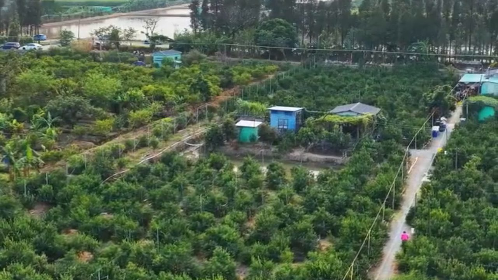
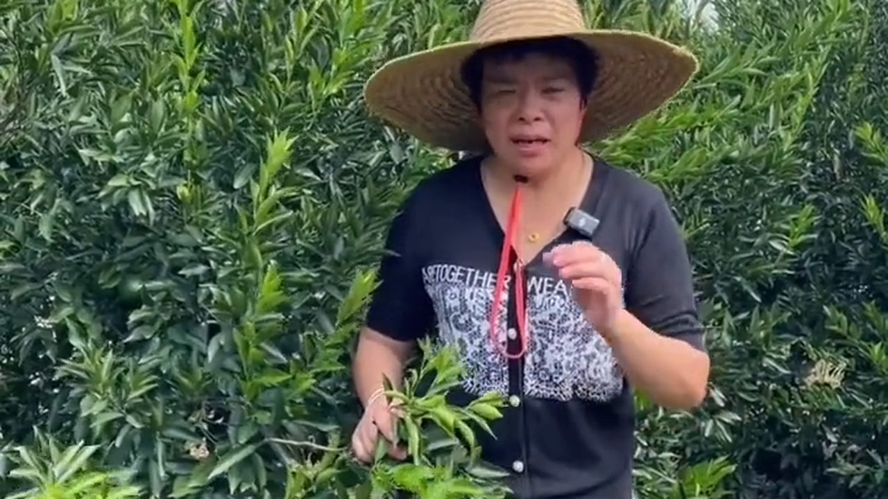
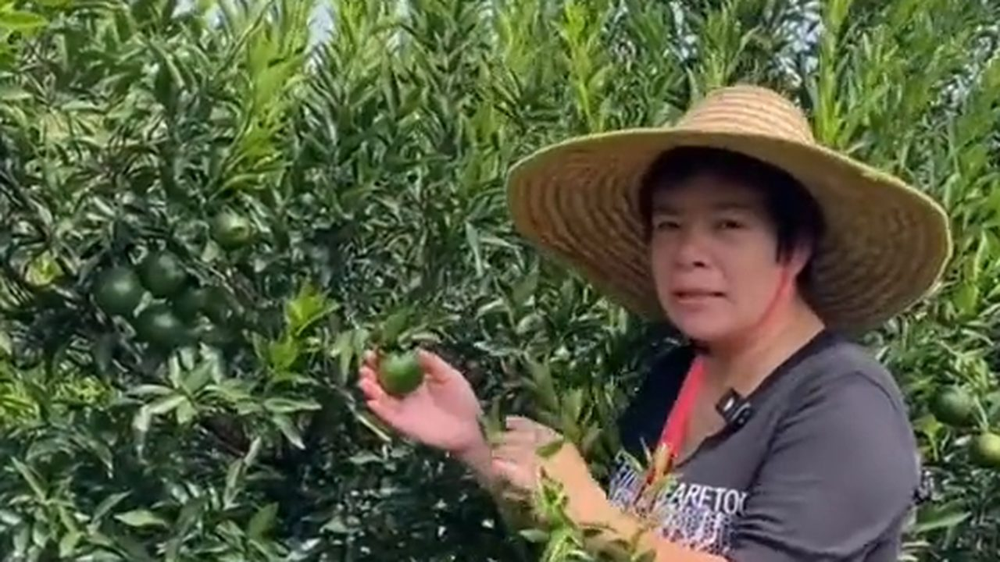
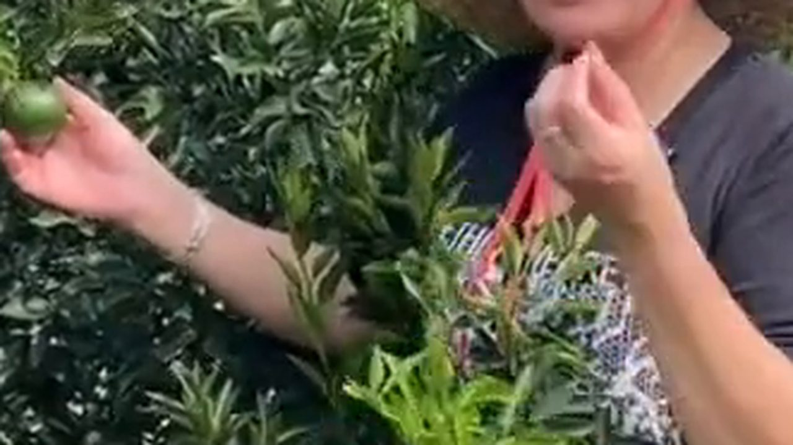
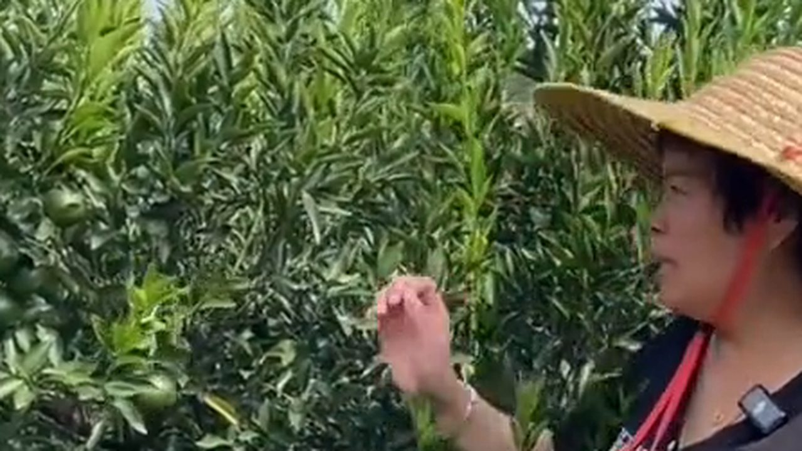

10月5日，國慶假期最後一天。新會柑園裡的頭批青柑已經下樹，這幾天在柑園裡，最多人問的一句話是：「這批摘得早，是不是好東西？」
先說一句可能讓人不舒服的話：青皮不是「年輕的陳皮」。它們同出一物，但在中醫體系裡是兩味藥——一個理氣，一個破氣。差別不在年份，在藥性。
而且今年 8 月就有商家宣布「頭茬青皮正式收倉」，7 月朋友圈已經在預售「三花青」「四花青」——開摘都還沒開始，話術先跑了一輪。這篇就把新會陳皮的三種採收時機一次講清楚。
一、柑園裡，叔父摘下一顆青柑拋過來

下午三點，天馬村附近一片柑園。一位種了二十多年柑的叔父摘下一顆青柑拋過來，皮還是硬繃繃的青色，指甲一掐，一股衝鼻的香氣就上來了。
「今年摘得早？」
「早批係疏果，唔摘嘅話，後面大紅二紅唔夠養分。」
「咁摘落嚟嘅青柑呢？」
「以前冇人要，而家有人搶住買，話係『頭采珍品』。」
這段話裡藏着今年柑圈最熱的一門生意。6 到 7 月摘的那些幼果，本來是疏果的副產品——摘掉過密的幼果，讓留在樹上的果子長得更好。過去幾乎沒有經濟價值，如今被包裝成「頭采珍品」，用疏果的邏輯反過來製造稀缺。
二、「三花青」「四花青」不是品類，是刀法

《地理標誌產品 新會陳皮》裡，按採收成熟度只分三檔：柑青皮（立秋至霜降）、微紅皮／二紅皮（霜降至小雪）、大紅皮（小雪之後）。沒有「三花青」，也沒有「四花青」。
那「四花」是什麼？它在藥典裡是藥材青皮的加工術語——把果皮縱剖成四瓣至基部，除去瓤肉、曬乾，習稱「四花青皮」。所以三花、四花只是開皮時順開三瓣還是四瓣的刀法名稱，跟果皮品質、採收時間、陳化價值沒有本質關聯。
同一顆果子，換一種開法就「晉級」成一個新品類——這是典型的把刀法挪用成品類。
三、青皮與陳皮：一個破氣，一個理氣

這是這一輪消費裡最大的誤區：很多人默認青皮曬乾就是「年輕的陳皮」，可以照陳皮的喝法日常養生。
依江門市五邑中醫院陳皮研究院的整理，兩者的歸經與功效完全不同：
青皮（含青柑仔）——歸肝、膽、胃經，功效是疏肝破氣、消積化滯，用於胸脅、乳房、胃脘脹痛，乳核、乳癰、食積等。破氣之力較強，氣虛者慎用。
陳皮（微紅皮、二紅皮、大紅皮）——歸脾、肺經，功效是理氣健脾、燥濕化痰，用於胸腹脹滿、不思飲食、嘔吐呃逆、咳嗽痰多，亦可解魚蟹毒。
隨著果實成熟，揮發油、橙皮苷、生物鹼類成分的含量呈下降趨勢，多糖類含量增多，藥性由峻烈趨於平和。研究院寫得很直白：雖同為一種植物，但不可相互代替使用。
「咁即係青皮冇用？」
「唔係冇用，係唔可以當口糧。青皮有嚴格嘅適用場景——肝鬱氣滯、胸脅脹痛、食積脹滿嘅人，喺醫生辨證下短期用。脾胃虛弱、氣虛、孕婦都唔啱。把破氣藥當茶日日飲，等於掛空擋踩油門。」
四、三種採收時機對照：青皮、微紅皮、大紅皮

把三個窗口擺在一起（依五邑中醫院陳皮研究院整理）：
青皮——8-10 月（立秋至寒露）。皮青綠、硬而薄，氣味辛烈；功效疏肝破氣、消積化滯。
微紅皮／二紅皮（黃皮）——10-11 月（寒露至小雪）。皮開始轉橙黃，由硬變軟、由薄轉厚；功效理氣健脾、燥濕化痰。
大紅皮（紅皮）——12 月（小雪至小寒）。皮全紅、厚而軟，滋味由辛苦轉為甜香；功效理氣健脾、燥濕化痰。
還有一個很多人不知道的差別——儲存難易跟糖分正好相反：糖分越高越難存、越容易被蟲蛀。所以青皮最易儲存，微紅皮次之，大紅皮最難。
這也是為什麼柑農自己很少囤青皮：它幾乎沒有糖分、以揮發油為主，陳化轉化是三個品類裡最慢的。一位自稱種新會柑的讀者說得更直接：陳化的時間不會改變藥性，收藏價值低才便宜。
「青皮存十年，唔係變老陳皮咩？」
「變唔到。青皮存幾多年都變唔成紅皮，藥典根本唔認呢個轉化。陳化唔會改變藥性——一個理氣，一個破氣，呢條線由樹上嘅成熟度決定。」
五、想喝陳皮水養生，現在該買什麼？

三句直播間話術，聽到就可以直接划走：
①「三花青、四花青是頂級品類」——品類名單裡沒有這兩個詞，那是刀法。
②「越早採收藥效越強」——青皮的橙皮苷、總黃酮在幼果期確實衝高，但這只是單項指標。有研究指出，7-8 月早採皮與 10 月後成熟皮的黃酮代謝組存在顯著差異：早採幼果的揮發油單項指標雖高，但多甲氧基黃酮等核心活性物質種類還不全、絕對含量遠低於 10 月採收的青皮。用一句話概括：氣有餘而質不足。
③「青皮便宜，存幾年就是老陳皮」——藥典不認這個轉化。
所以分三種人來說：
打算喝陳皮水日常養生、想等今年新皮的——現在不用動。等霜降（10 月 23 日前後）之後的二紅皮、小雪（11 月 22 日前後）之後的大紅皮，才對應得上「新會陳皮」這四個字。
確實有肝鬱氣滯問題、需要疏肝消積的——按藥材的思路去買，遵醫囑短期用、中病即止。它沒有「陳三年為陳皮」的收藏故事，砍掉這部分溢價，才是青皮的真實成本。
已經付了「三花青」預售的——去問商家一句：這批果的採收時間在立秋前還是立秋後。立秋前的疏果幼果，對症短期用可以，別按陳皮囤，更別按藏品囤。
常見問題
青皮是不是「年輕的陳皮」？不是。青皮歸肝、膽、胃經，功效疏肝破氣、消積化滯；陳皮歸脾、肺經，功效理氣健脾、燥濕化痰。同出一物但不可相互代替，差別在藥性而非年份。
三花青、四花青是什麼？是頂級品類嗎？不是品類。新會陳皮按採收成熟度只分青皮、微紅皮（二紅皮）、大紅皮三檔；「四花」是藥材青皮的加工術語，指把果皮縱剖成四瓣，三花、四花只是開皮刀法。
6-7 月摘的「頭采青皮」是什麼？本質是疏果的副產品——摘掉過密的幼果，讓留在樹上的果子長好。過去幾乎沒有經濟價值。要買青皮，認立秋至霜降這個窗口。
青皮適合什麼人喝？肝鬱氣滯明顯、胸脅脹痛、情緒抑鬱、食積脹滿的人，在醫生辨證下短期使用。脾胃虛弱、氣虛者慎用，孕婦與體質虛寒、正在進補的人都不適合。
青皮和大紅皮，哪個好儲存？青皮最好存，微紅皮次之，大紅皮最難。儲存難易取決於糖分：糖分越高越容易蟲蛀。青皮幾乎沒有糖分，所以最易存放，但陳化轉化也最慢。
想喝陳皮水養生，現在該買什麼？現在不必急着買。等霜降（10 月 23 日前後）之後的二紅皮、小雪（11 月 22 日前後）之後的大紅皮，才對應「新會陳皮」。若只想日常順氣，選三到五年的二紅皮或大紅皮更穩妥。
結語
青皮不是騙局，它有嚴格的適用場景；但它也不是「陳皮的入門版」。這一季柑圈最貴的兩個詞，一個是「圈枝」，一個是「三花青」——兩個都不是品類，一個是繁殖方式，一個是開皮刀法。把這層弄清楚，錢才不會花在形容詞上。
註：本文功效與採收期敘述引自江門市五邑中醫院陳皮研究院（暨南大學附屬江門中醫院）整理資料；品類劃分依《地理標誌產品 新會陳皮》。價格與市場話術為公開討論整理，僅供參考，身體不適請就醫。
想弄清「圈枝」的真相，看這篇《公路邊攤開一大片：新會陳皮的「圈枝」真相》；想知道降溫這幾天陳皮怎麼吃，翻翻這篇《冷空氣南下，新會陳皮怎麼吃？》。想親手拿一顆青柑對比大紅皮，來新會陳皮村南門牌坊G04找滢滢姐，店裡放着不同採收期的樣皮，可以當面看、當面聞。
下期預告：二紅皮上市的時候，滢滢姐會把青皮、二紅皮、大紅皮三種皮同時開湯，用同一壺水、同一份量比香氣與口感——不看標籤，只憑鼻子和舌頭。